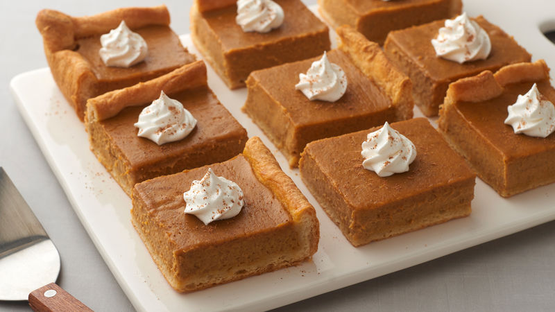

Pumpkin Pie Bars
Description
Have you ever wanted pumpkin pie, but in bar format? This recipe is sure to satisfy your need for rectangular pumpkin pie dessert products! Simply follow along and you too will have rectangular pumpkin pie!
Ingredients
- 4 large eggs
- 1 ½ cups white sugar
- 2 teaspoons ground cinnamon
- 1 teaspoon salt
- 1 teaspoon ground ginger
- ½ teaspoon ground cloves
- 1 (29 ounce) can pumpkin puree
- 2 (12 ounce) cans evaporated milk
- 1 (15.25 ounce) package yellow cake mix, divided
- ½ cup butter, melted
- 1 (8 ounce) container frozen whipped topping, thawed (Optional)
Steps
- Preheat oven to 350 degrees F (175 degrees C).
- Beat eggs in a large bowl. Whisk sugar, cinnamon, salt, ginger, and cloves together in a separate bowl. Stir sugar mixture and pumpkin into eggs until completely incorporated.
- Gradually stir evaporated milk into pumpkin mixture. Add 1 cup yellow cake mix to the pumpkin mixture and stir to remove any lumps. Pour mixture into a 9x13-inch baking dish. Sprinkle remaining yellow cake mix over the top and drizzle butter over the cake mix.
- Bake in the preheated oven until set, about 1 hour. Cool to room temperature and cut into bars. Top with whipped topping.